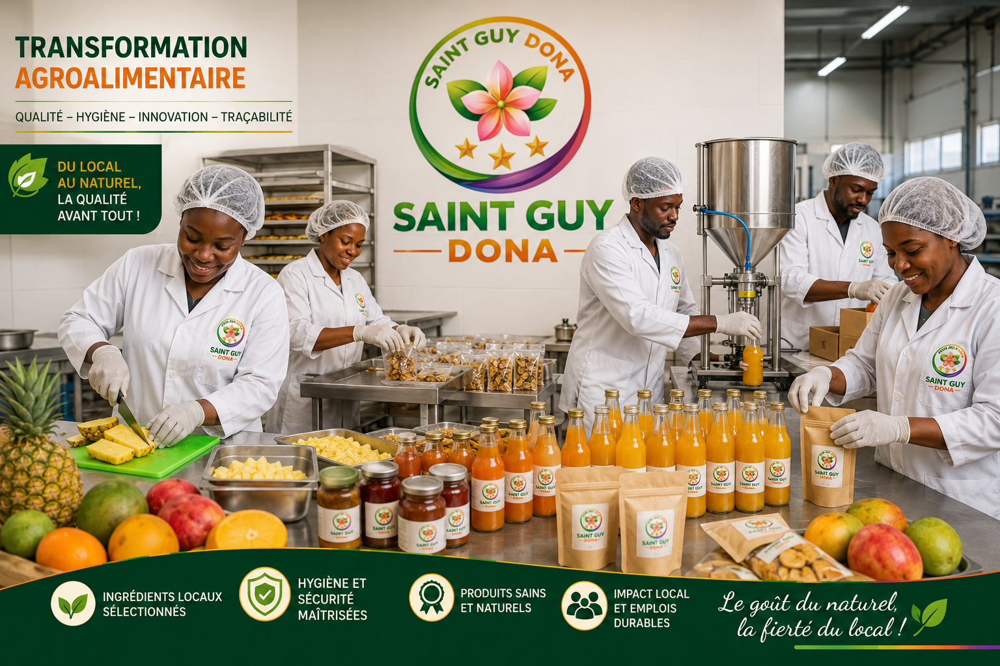

Notre mission
Valoriser, soutenir, employer
Promouvoir la consommation locale, soutenir les producteurs et créer des emplois durables pour les jeunes et les femmes, à travers la transformation agroalimentaire, la beauté naturelle et la mode.
Notre histoire
Spécialisée dans la valorisation des produits agricoles locaux, SAINT GUY DONA transforme, conditionne et commercialise des denrées alimentaires naturelles et nutritives : jus et sirops, produits dérivés, amuse-bouches, miel, ainsi que l'élevage de volailles et de lapins.
Cette exigence de qualité et de naturalité s'est naturellement étendue à deux nouvelles filières : une gamme de cosmétiques et de prestations d'esthétisme, et une activité de vente en gros de chaînes et de pagnes, pour habiller et parer les femmes et hommes du Bénin.

Notre mission
Promouvoir la consommation locale, soutenir les producteurs et créer des emplois durables pour les jeunes et les femmes, à travers la transformation agroalimentaire, la beauté naturelle et la mode.
Notre vision
Être une référence dans la transformation agroalimentaire, l'élevage mixte, la beauté naturelle et l'accessoire de mode — reconnue pour la qualité, la naturalité et l'innovation de ses produits.
Nos valeurs
Des ingrédients locaux, sans additifs ni conservateurs superflus, du jus au savon.
Des relations directes avec les producteurs, les artisans et les commerçantes.
Un engagement fort pour l'emploi et l'autonomisation des jeunes et des femmes.
Des normes d'hygiène et de qualité strictes, à chaque étape de transformation.
Notre engagement
Nous participons activement à la sécurité et à la souveraineté alimentaires du Bénin, tout en favorisant l'autosuffisance locale à travers notre élevage de volailles et de lapins.
Dans nos filières beauté et mode, nous donnons la priorité aux talents locaux — esthéticiennes, artisans et revendeuses — pour construire des filières commerciales justes et durables.
En bref
Jus & sirops, produits dérivés (purée de tomate, confitures, farine multi-céréales), amuse-bouches, miel naturel, élevage de volailles et de lapins.
Cosmétiques naturels — savons, beurres, huiles et soins — ainsi que des prestations d'esthétisme.
Vente en gros et demi-gros de chaînes, bijoux fantaisie et pagnes, à destination des commerçantes et créatrices.
Découvrez nos produits en boutique ou contactez-nous pour une commande en gros.